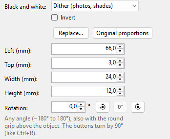

Pictures
Logos, photos and symbols. The printer prints black dots only; you decide how the picture becomes black and white.
-
Add a picture
The Picture tool or Insert > Picture..., then choose a picture file. Transparent parts print white.
- Supported
- PNG (also with transparency), JPG/JPEG, BMP, GIF (an animation: its first frame), TIF/TIFF (the first page), WebP (an animation: its first frame), HEIC/HEIF (phone photos), PDF (the first page), SVG (stays sharp at any size); with All files also ICO and EMF/WMF (turned into pixels)
- Not in SVG
- text along a line and vertical text (convert it to paths in your drawing program first), filters, masks, links to other files
If an SVG has such parts, the selected picture's settings show Parts of this picture can't be printed – tip: insert it as a PNG. The (i) next to it says what is missing and how to print it all: save the picture as a PNG in your drawing program and insert it with Replace....
Text in an SVG prints with the fonts on this PC. If one is missing, QL Label Maker uses a substitute font and says This picture prints with a substitute font. The (i) names the font; install it and insert the picture again with Replace....
WebP needs Windows' "Webp Image Extensions"; they come with Windows 11. For HEIC, Windows needs the free "HEIF Image Extensions" and "HEVC Video Extensions" from the Microsoft Store. If they are missing, QL Label Maker says so when you insert the picture.
On insert a picture is reduced to at most 2000 pixels per side, more than a label can print; an SVG stays a drawing. It is stored in the .qllabel file; the picture file isn't needed afterwards.
Drag a corner to change the size; the proportions stay. Hold Shift to change them freely.
-
Black and white

- Dither (photos, shades)
- Grey areas become fine dot patterns. Good for photos and gradients.
- Threshold (logos, drawings)
- Everything darker than the slider becomes black, the rest white. Good for sharp edges.
- Invert (white on black)
- swaps black and white.
The canvas shows the result dot for dot, as it will print.
-
Replace and proportions
Replace... swaps the picture for another file. Original proportions restores the proportions of the picture file.